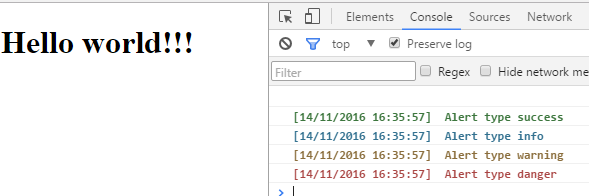

Logger.js
Control logs for production systems and development.
Usage
Include in the main script the following (enable or disable logs)
//For production systems
Logger.disableLog();
//For development systems (Default)
Logger.enableLog();And in the other scripts use the following for logger, (Theme Bootstrap)
Logger.success(var1,var2,...,varN);
Logger.info(var1,var2,...,varN);
Logger.warning(var1,var2,...,varN);
Logger.danger(var1,var2,...,varN);
Example
<!DOCTYPE html>
<html>
<head>
<title>Example Logger.js</title>
<script src="Logger.js"></script>
</head>
<body>
<h1>Hello world!!!</h1>
</body>
</html>
<script>
Logger.disableLog(); //disable logs
Logger.success("Alert type success", "this not display");
Logger.info("Alert type info", "this not display");
Logger.warning("Alert type warning", "this not display");
Logger.danger("Alert type danger", "this not display");
Logger.enableLog(); //enable logs
Logger.success("Alert type success");
Logger.info("Alert type info");
Logger.warning("Alert type warning");
Logger.danger("Alert type danger");
</script>
Result:
